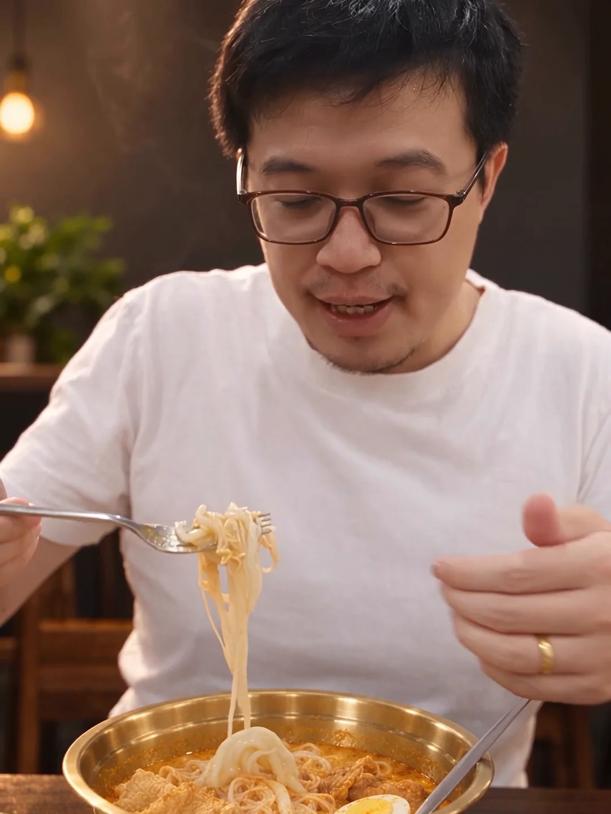
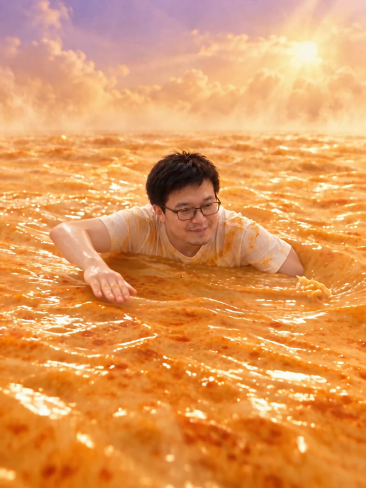
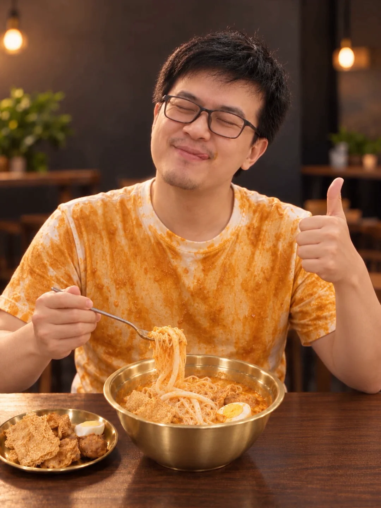
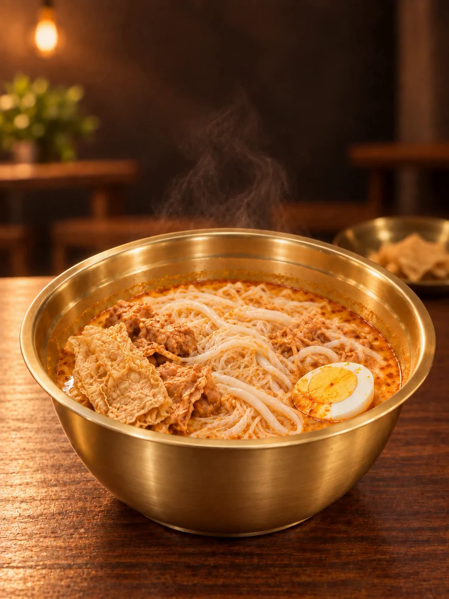

真实吃面，进入无边咖喱梦境
采用 Genjutsu 编辑 5–10 秒的真人段；汤浪仍来自 Seedance，其他 CG 镜头共用项目素材。版本名不表示整片由单一模型生成。
重点看：脸和动作留下了，衣服、碗与环境发生变化
第二章：Golden Laksa 学习与实验
从真实的米粉、长老鼠粉和炸料出发：保留吃面的表演，换成白 T、金碗与暖色餐厅，再用一场无边汤海把“好吃到无法自拔”变成画面。
先看结果，再拆过程
独立广告保留 3:4 无字画面；对比片左边是原片剪辑，右边是 AI 广告，只加版本标签。先看前五秒，再看入口动作、汤浪和产品收尾。
采用 Genjutsu 编辑 5–10 秒的真人段；汤浪仍来自 Seedance，其他 CG 镜头共用项目素材。版本名不表示整片由单一模型生成。
左侧为 25 秒实拍素材剪辑，右侧为采用的广告；两边共享本轮旁白与配乐，只比较画面。这里没有播放量或销售数据，不能据此推断营销提升。
影片需手动播放；播放一条时其他影片会暂停。导出、画面与播放器完整播放检查已通过；CapCut 旁白的主观口音，以及“长老鼠粉”和 Golden Laksa 的读法，仍需人工试听确认。
每五秒，一个叙事任务
五秒是理解结构的单位，不是每一镜的固定长度。最终开场把挂汁与粗细面合成一段连续提面，再接炸料；前 0–5 秒是两段食材素材，后面四段各约五秒。
先见金碗挂汁，再看细米粉与长老鼠粉，最后接炸料。

实拍负责入口节奏；AI 改白 T、全金碗与暖色餐厅。

看不到碗沿与桌面；末段一道前景汤浪遮满镜头。

不是一点酱汁：满身咖喱配夸张满足表情，让梦境落回现实。

品牌句放在产品收尾；独立广告不加画面文字。
吸引力规划：首秒给食物，入口带出“有多好吃”的问题，汤海放大感受，咖喱衣兑现笑点，最后回到产品。这是结构设计与项目复盘，尚无观众留存数据。
六个可复做的动作
本章是有成片与提示词的实验记录，不是逐按钮屏录教程。先说明输入是什么，再说明模型改变了什么，最后检查实际输出。
保留原文件，另外切出食物、炸料和入口动作。最终主广告是 1080 × 1440；先检查脸、叉子和碗能否同时留在中央，构图上下留呼吸空间。
每段标出好看的入点、出点和主焦点。
横片不能只靠放大裁切；竖片也不能把碗或叉子切掉。
准备干净源片、目标图和必要的身份参考。
暂停看四边：关键主体是否完整、是否出现不一致的补边。
References 用目标图与食材／身份图建立新镜头；Edit Video 则必须上传要改的源视频，再用目标图约束服装、碗和环境。照片不能自动替你保留原片的真实动作。
金碗食物特写、无边汤海和咖喱衣笑点，可以由目标图建立画面；食材图约束米粉与长老鼠粉的真实形状。
S02 的本人源片负责脸、眼镜和入口表演。目标图只负责白 T、香槟金碗、胡桃木桌与暖色餐厅。
生成前先确认：提示词只提实际上传的参考。保留本人来源；不要把其他行业的数字人角色或声音替进这次真人实验。
同一段入口素材分别做 Genjutsu 与 Seedance Edit 测试。Genjutsu 更贴近原片的近景、手势、俯身入口和镜头下移；Seedance 更接近按参考重新演绎的固定中景。
1248 × 1664、24 fps、4.708 秒。轻缓至五秒接入时间线；主广告交付为 1080 × 1440。
测试设为 720p，S02 与 S03 实际输出 834 × 1112。交付片的 1080 × 1440 是上采样，不是模型原生 1080p。
复做时：连续检查入口与抽叉，特别看嘴、叉子、手指和眼镜；选择能保持动作的版本，不只挑一张漂亮截图。
开场从面条轻推近，再侧移／扫接到炸料；汤海后段让一道前景咖喱浪遮满镜头，接出整件沾咖喱的白 T。转场要说明“为什么到下一幕”，而不只是掩盖生硬的切镜。
制作边界：本次已完成本地剪辑与转场合成；After Effects 的分层、跟踪与蒸汽增强属于后续制作计划，没有在本次冒充已执行。
Fraser 与 Holden 的试听被用户拒绝后，改用已登录的 CapCut 免费“爽朗男声”生成华语旁白，并正常导出 WAV。它是平台预设声线，不是本人声音克隆；这次没有开启 Pro 订阅。
今天这碗，米粉配长老鼠粉，再额外加一份炸料。看这料，够丰富！热乎乎的，到底有多好吃？哇！这一口，香浓到像游进了咖喱汤，完全无法自拔！好吃到，连少年感都回来了。Golden Laksa，这一口，真上头。
用稀疏、简单的吉他底，给食物和旁白留空间。
品牌句对齐 20 秒后的金碗产品画面。
“少年感回来了”作为主观、玩笑式感受；不作年轻十岁的功效承诺。
长老鼠粉、Golden Laksa、句子停顿与背景音乐是否清楚。
检查粗细面形状、金碗内外、本人脸与眼镜、汤海无碗边、整件咖喱衣。再看首秒、入口、浪遮镜、笑点和产品收尾是否连贯；最后核对真正交付的文件，不用草稿替代成品。
25 秒、尺寸、完整解码、连续帧与实际播放器到结尾；左右对比的版本标签位置。
主观口音与食材／品牌读法；生成摆盘和份量是否准确对应实际商品。
观看留存、销售提升与食物功效。对外使用前另核品牌、肖像和素材商业使用范围。
我的学习与下一次实验
音乐与台词是我目前比较弱的部分。这次原片由女儿帮我拍摄；先把做出来的结果留下，也把下一次要改进的事写清楚。
这一轮，我想把声音也当成要练习的一部分：配乐简单一点，旁白先讲清食材，再跟着第一口、梦境和产品收尾走。AI 已经让女儿帮我拍的画面有了不错的广告感觉，也让我看到，拍摄前把构图、焦点和动作想清楚，认真拿稳镜头，成片还有进步空间。
原片的清晰度、动作和产品细节仍会影响结果。下次我会先设计镜头，再拍一组更稳、更好看的素材，用同样的方法做对比，看看广告能改善多少。
从执行记录提炼
以下英文是本次执行提示词的精简复做版。先准备指定输入，再复制；它们描述的是目标，生成后仍要检查实际结果。
必要输入：五秒真人吃面源视频 + 一张目标图。将目标图作为第一张图片参考（@Image1）；图中需能看清普通白 T、香槟金碗与暖色餐厅。
Edit the supplied five-second laksa tasting video into a photorealistic premium Malaysian food commercial. Retain the SAME man, face, hair, black-frame glasses, natural skin texture, real eating performance and timing. Use @Image1 only for the plain white T-shirt, champagne-gold bowl material, dark walnut table and warm restaurant environment. Change the pink shirt to an ordinary clean white cotton T-shirt with natural folds and shadows. Change every visible silver part of the main bowl, including inner wall, rolled rim and exterior, to satin champagne-gold metal, preserving the original geometry and food. Replace the whole domestic background and pale table, including blurred side extensions, with one coherent dark restaurant, walnut tabletop, soft warm upper-left light and subdued amber bokeh. Preserve the fork trajectory, fingers, hands, fine round bee hoon mixed with thicker LONG round rice noodles, bite timing and head movement. Keep 3:4 framing and five-second duration. No face replacement, invented ingredients, extra limbs, captions, lettering, logos, overlays, borders or watermarks.
检查焦点：脸与入口动作能辨认，白 T 有自然褶皱，碗内、碗沿和碗外均为金色；不能用新摆盘替代原食物。
必要输入：已有的五秒无边咖喱汤海视频。源片中需已是同一个戴黑框眼镜的人轻缓游泳；这条用 Edit Video 延续场景并加汤浪，不把真人吃面原片直接变成汤海。
Keep the supplied dreamlike borderless orange-gold laksa curry sea and the SAME black-frame-glasses man swimming gently, retaining his identity, the source scene, 3:4 composition and five-second duration. From 0 to 3 seconds retain gentle swimming and the luminous warm horizon. From 3 to 4.4 seconds, one smooth glossy orange curry swell rises in the NEAR FOREGROUND between the swimmer and lens, curling toward the camera with warm golden highlights. By 4.6 seconds the wave sweeps across the whole lens, hiding the swimmer and horizon completely. End with the entire frame covered in rich opaque warm orange curry liquid, softly swirling, with no black gaps, ready to cut into the next scene. Premium photorealistic food commercial, elegant dream sensation and slow realistic fluid motion. The swimmer stays relaxed and safe; the wave is a foreground lens wipe, not a wave hitting him. No bowl rim, pot wall, table, giant noodles, ocean-blue water, white sea foam, extra people, text, captions, lettering, logos or watermark.
检查最后半秒：浪要覆盖四角、人物和地平线，再接咖喱衣画面；没有遮满时不要硬切。
展开实验记录
先看上面的采用版本，再按需要展开原片与 Seedance 测试。判断以相同动作区间为准，不把模型名字当作效果保证。
这条保留未做 AI 画面编辑的实拍镜头，但已剪接、整理比例并配音乐；它不是未加工的单个相机原文件。回看食材、叉子与入口节奏，作为后续编辑的行为参考。
练习：暂停 5–10 秒，写下三件“必须保留”的动作，再用右侧 AI 版检查它们有没有被改变。
重点比较 5–10 秒：人物大小、手势、入口与机位是否像原片。S02 与汤浪段测试为 720p，合成到 1080 × 1440；其余 CG 镜头与推荐版共用。
这条保留 v6 旧配乐，比较模型时先静音。练习：只比较这一段的动作连续性和构图，不把两版音轨差别当作模型编辑能力。
本章小练习
不需要先做整条广告。拍一个真实动作，用一条清楚的编辑约束检验模型能不能保住它。